|
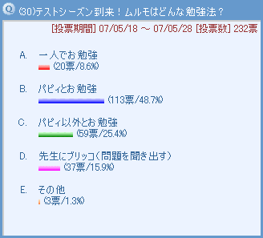 ムルモとパピィのお勉強、想像するだけでも楽しい気分になりますね(^^)。二人のどっちから提案したのかな？しかしコメントにはケンカの文字がたくさん…これじゃあ勉強所ではないですね。果たして明日のテストの出来はいかに！？他では先生にブリッコ作戦のコメントが面白いです。ずるがしこいムルモ、しかし先生も一枚上手で、テストの問題を新たに作り直して「教えてもらった問題と違うでしゅ〜っ」と泣いてしまうムルモも何となく想像できますね。［コメント一覧］
|
|
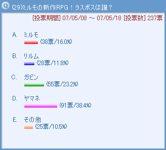 なんと意外にもラスボス候補はヤマネちゃん！？ヤマネは忍術はかなりの腕前だし、推理小説の真犯人みたいに「えっ、この人がラスボス？」的なキャラがふさわしいことを考えると妙にしっくりきます。逆にリルムは、今度は主人公の仲間として活躍してくれるのかも。その他の意見ではダアクやアクミといった悪役キャラもありますが、サリア様を敵に回したら大変です。一撃でパーティ全滅になるかも。［コメント一覧］
|
|
 パンツスケッチが１位とは・・・！ニュース３人娘に向かってパンツの話題を繰り出すヤシチ…もはや完全に周りが見えなくなっています。いや、ヤシチを信頼している弟子たちの方がむしろ心配かも。ミルモに100連敗は恥ずかしい記録だけど、滅多にない記録とおだてられてヤシチは逆に得意気になったりして。だけど新聞記事はチーエによる辛口コメントで埋められてしまいます。［コメント一覧］ パンツスケッチが１位とは・・・！ニュース３人娘に向かってパンツの話題を繰り出すヤシチ…もはや完全に周りが見えなくなっています。いや、ヤシチを信頼している弟子たちの方がむしろ心配かも。ミルモに100連敗は恥ずかしい記録だけど、滅多にない記録とおだてられてヤシチは逆に得意気になったりして。だけど新聞記事はチーエによる辛口コメントで埋められてしまいます。［コメント一覧］
|
ワカバ＆トモン＆チーエ(1)

ワカバ＆トモン＆チーエ「こんにちは〜っ、ニュース３人娘で〜す」
ヤシチ「もしかして拙者に取材なのか！？」
ワカバ「ミルモ王子のライバル特集ということで、
今日はヤシチさんを取材しちゃいま〜す」
サスケ「すごいぜ、ヤシチのアニキ！」
ハンゾー「なのら〜！」
ヤマネ「でございます！！」
トモン「そのかっこいい表情、いただきよ！」
ワカバ「それじゃあ早速質問するわね」
・・・（この間いろいろと質問）・・・
ワカバ「最後に、妖精新聞に何かアピールしたいことはありますか？」
ヤシチ「ふっふっふっ、その質問を待っていたのだ！
じゃーーんっ！」
トモン「スケッチブック？」
チーエ「いろんな模様があるわね」
ワカバ「ヤシチさん、このスケッチブックには何が描かれているのですか？」
ヤシチ「これは拙者が人間界で危険と戦いながら描き抜いた
パンツコレクションなのだ〜〜っ。
まずこのパンツはミルモのパートナーでもある南楓の・・・」
この後数十分にも渡ってヤシチのパンツ講義が続きます。
途中から３人娘は耳を傾けるのをあきらめ・・・。
トモン「今回のタイトルは、”変態忍者参上！”で決まりね」
チーエ「女の子の敵だね」
ワカバ「久々にチーエの辛口コメントが見られそうね」
ヤシチ「ん？何か言ったか？」
ワカバ「いーえ！
では今日はこの辺で取材を終わらせていただきま〜す」
ヤシチ「なに〜っ、ここからが盛り上がるところなのに…」
ハンゾー「ボクたちの活躍もあるのら〜」
サスケ「そうだぜ、新聞に書いてくれだぜ！」
ヤマネ「ヤシチ兄様・・・」
ヤシチは目立ちたがり屋だから、自慢のパンツスケッチを何のためらいもなくニュース３人娘に披露してしまいそうです。相手は普通の女の子、翌日の新聞は大変なことになるのは間違いなさそうですね（もちろんパンツスケッチが新聞に載ることはありません）。そして新聞が配られた後のシーンは考えるだけでも恐ろしいですね。(2007/6/7)
|
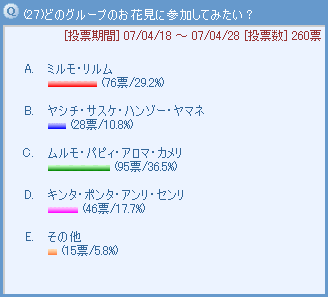 １位は我らがムルモのグループですね。上品なアロマがいることで和やかなお花見になるのか、それともムルモとパピィの大げんかに発展するのか、想像するだけでも楽しいです。２番手はミルモたち。夫婦愛以上にリルムのお弁当に期待が集まるとは…。その他の意見ではニュース３人娘が面白そうです。眠ったり虫取りしたりと３人ともそれぞれの行動を取ることであまり盛り上がらなかったりして。［コメント一覧］
|
|
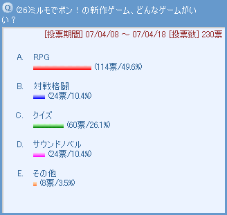 ダントツでRPGが１位…妖精の個性的な性格や必殺技は確かにRPGに持ってこいな題材ですね。RPGといえばラスボスの存在がありますが、皆さんは誰をラスボスに仕立てるのでしょう？（次回の投票のお題ですね） ２番手はクイズゲーム、これはムルモ屋本舗で大流行中(?)のQMA4の影響でしょうか。常連さんでは果たして誰がクイズ王になるのかな？その他では「妖精の楽器を使って音楽ゲーム」がなるほど！と思いました。音ゲーはコナミの得意ジャンルなのに、ゲーム化されなかったのが残念。［コメント一覧］
|
|
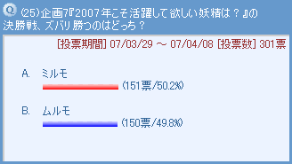 締め切りぎりぎりまでマッチレースが続いたこの二人、最後は兄の貫禄勝ちとなりました（声援のコメントも兄の方が多いし）。たった１票差で敗れたムルモは悔しくてその日は眠れなかったことでしょう。がんばった二人への特典として、下の絵で自身をアピールしていただきます。［コメント一覧］
（お題提供：レインボーさん）
|
|
ミルモ＆ムルモ(6)
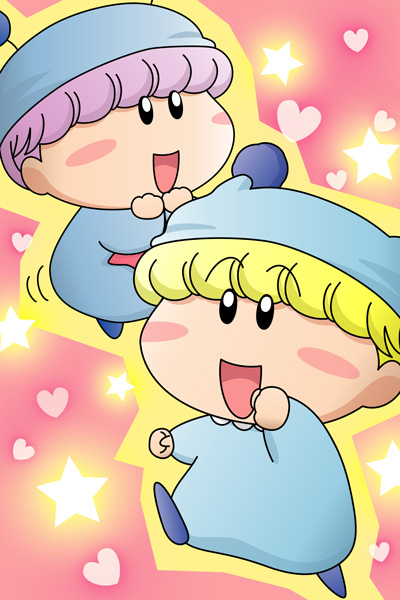
対決の翌日、妖精新聞と二人の写ったポスターが妖精界中に配られました。大接戦をたたえ、ポスターには二人を写すことが決まりました。心の広いミルモは了承し、２位のムルモも営業スマイルで撮影に臨みました。
「お兄たまが邪魔でしゅ」
配られたポスターを見てムルモはご機嫌ななめ。2008年は１位奪回を目指し、早くもブリッコの修行を始めるムルモがそこにいました。
(2007/4/29)
|
|
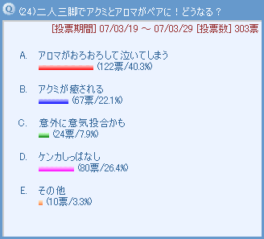 私のミスで連続投稿有効状態で作ってしまい、短時間にAにたくさん票が入ってしまいました。それでもコメントの多さから、多くの方がアロマが泣いてしまう光景を思い浮かべたようですね。やはりリルムくらいお節介でないとアクミの心を開いてあげることが出来ないのでしょうか。アクミとアロマの組み合わせはレアと言えるため、せっかくなので絵にしてみました。［コメント一覧］
（お題提供：レインボーさん）
|
アクミ＆アロマ(1)
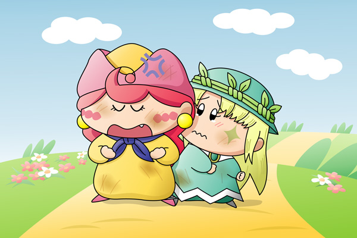
アクミ「ったく、やりにくいな・・・」
アロマ「ごめんなさい・・・」
アクミ「だいたいあたいがお前みたいなトロいのと二人三脚
組ませやがって・・・あぁイライラする！」
アロマ「・・・ごめんなさい・・・」
優勝賞品に目がくらんで二人三脚大会に特別参加したアクミでしたが、不運にもペアの相手はアクミと正反対の性格の持ち主であるアロマ、という強引設定です。Aに投票してくださった方はおそらくこんなシーンを思い浮かべたと思います。
ミルモ＆ムルモ＆パピィをうっとりさせたアロマの癒し効果もアクミには全然効果なし…というかむしろ逆効果でしょうね。まさにアロマにとっては試練です。とはいえこのままこれで終わる二人ではないと思いますので、この後どんな展開が起こりえるのかを皆さんにぜひ聞いてみたいです(^^)。(2007/4/20)
|
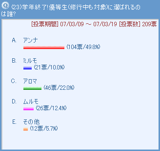 大方の予想通り、アンナがダントツでトップでしたね。そしてミルモが最下位なのも皆さんの予想通りでしょうか！？とても真面目で努力家で、そして善悪の区別をはっきりつけるアンナ以外には優等生は考えにくいですが、もしもアロマが妖精学校の生徒としてもう少し登場していたらもっといい勝負を演じていたかもしれませんね。天才タイプのアロマに努力タイプのアンナが優等生の座をどう守るのか？結構面白そうな勝負と言えそうです。さすがのムルモも今回ばかりはブリッコは効きませんでした。［コメント一覧］
|
|
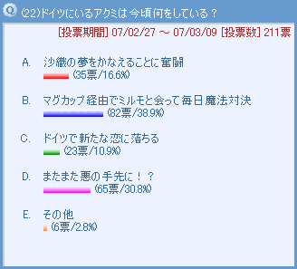 「恋よりもケンカ」というイメージがアクミにぴったりですよね。ミルモに正々堂々と戦いを挑んではいつも負けていそうですが、それでもあきらめない粘り強さがアクミのよいところです（挑戦を受けるミルモは大変です）。票数では３位ですが、沙織のために奮闘するアクミへの応援コメントが多いのが個人的にうれしかったです。数年後、アクミもミルモと同じように人間界に別れを告げる日が来るのかなと思いますが、アクミだったらどんな行動に出るのだろう？［コメント一覧］
|
|
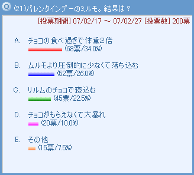 マトモな選択肢を入れ忘れてしまいましたが(汗)、チョコがたくさんもらえていることを意味する「食べ過ぎ」が選ばれたのはある意味マトモと言えるのかも。それともまん丸に太ったミルモを見てみたい意見が多数なのかな。リルムのチョコに対するコメントはすごいものばかりですね。ムルモへのリルムチョコがミルモに行き渡る…ムルモのしたたかさを想像して笑ってしまいました(^^)。その他の意見にある「リルムチョコのみ食べないで悲しませる」はまた波乱含みな愛のドラマが始まりそうで面白いですね〜。［コメント一覧］
|
|
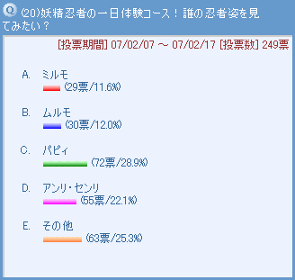 似合うかどうかは別として、かわいい女の子の忍者服姿を見てみたい思いが結果に現れましたね。逆にミルモ・ムルモは１３話「とっても大変な日」で忍者っぽい黒装束を着ていたこともあり順位は低め…？その他の意見ではオトメがツボにはまりました。師匠から新弟子（それも女の子）を紹介すると言われてわくわくしていたヤシチは…。［コメント一覧］
|
|
ヤマネ＆パピィ(1)
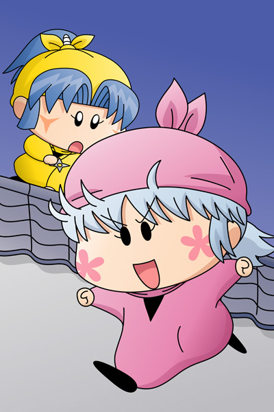
忍者服で１位に選ばれた記念にパピィの忍者服を描いてみました。忍者服は濃い目の色が基本なので、いつものピンクよりも濃くしてみました。さらに頭巾をかぶるので髪型も変更…肩までかかる髪は後ろで縛っています。…うーん、あまりパピィらしく見えませんね(^^;。
絵の方はヤマネと仲良くなったパピィがヤマネに頼んで忍者体験をさせてもらっています。潜入のタイミングをうかがっているシーンですが、せっかちなパピィは待つことが苦手な突撃タイプ…この後あっさりとつかまってしまいます(笑)。
(2007/3/11)
|
|
 ３位「リルム激怒」のコメントが熱いこと…(^^;。最も正統派な行動が１位に選ばれたのには皆さんのミルモへの期待が感じられます。感激したリルムを見てミルモは次にどんな行動に出るかを考えるのも楽しいですね。その他の意見にある「お城でパーティ開催してハチャメチャに」はマルモ国王の企画で十分にあり得そう。ハチャメチャな一日だったけれど、夜にミルモがリルムを呼び出してそっとプレゼント…という展開だといいなぁ。［コメント一覧］ ３位「リルム激怒」のコメントが熱いこと…(^^;。最も正統派な行動が１位に選ばれたのには皆さんのミルモへの期待が感じられます。感激したリルムを見てミルモは次にどんな行動に出るかを考えるのも楽しいですね。その他の意見にある「お城でパーティ開催してハチャメチャに」はマルモ国王の企画で十分にあり得そう。ハチャメチャな一日だったけれど、夜にミルモがリルムを呼び出してそっとプレゼント…という展開だといいなぁ。［コメント一覧］
|
|
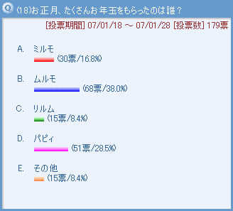 妖精にとってお年玉はお菓子を買うための大切な資金源。お年玉をもらうにはそれなりの作戦が必要…というみんなの意見の元、１位はやっぱりムルモですね。両親からだけではなく、お城や街の妖精からも「いいんでしゅか！？」と一応は言うもののちゃんともらっていそうです。その他の意見では、マンボも大穴でありえそうです。高級なスケボーを買っても乗りこなせないマンボを想像しちゃいます。［コメント一覧］
|
|
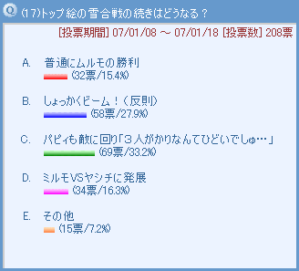 もともとはムルモVSサスケ・ハンゾーの雪合戦も、主役がムルモだとさらに白熱…という皆さんの考えが投票から伝わってきました。この後はムルモVSパピィの一騎打ち（というかケンカ）になり、サスケとハンゾーはムルモから相手にしてもらえなくなりそう。２位のしょっかくビームもムルモならやりかねないでしょうね。後でミルモやリルムに怒られるのかな。ムルモの「うるうる目」のコメントがいくつか見られましたので、他のコメントも参考に下の絵を描いてみました。［コメント一覧］
|
ムルモ＆パピィ(10)
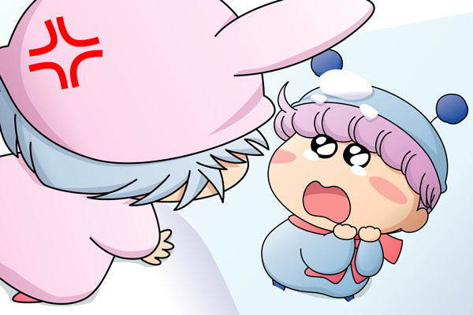
バコッ。（雪玉がムルモに命中）
ムルモ「ほえ〜〜っ」
パピィ「きゃははっ、ムルモは相変わらずのろいわね」
ムルモ「３人がかりなんてひどいでしゅ…」
パピィ「ムッ、あたちにそんな顔ちても無駄よ！」
ムルモ「リルムしゃんたちも何か言ってくだしゃい…」
リルム「ムルモ様…」
ヤマネ「ムルモ殿…」
ムルモ「リルムしゃんとヤマネしゃんとボクでチームを組めば
ちょうどいいでしゅよ」
パピィ「え・・・」
リルムとヤマネを誘い込む作戦をとっさに思いついたムルモ。ムルモのうるうる顔を放っておける女の子（パピィ以外）はいないはず。結局リルムとヤマネの圧倒的な攻撃力により、パピィたち（サスケ・ハンゾー含む）は雪まみれになってしまうことは確実ですね。そしてパピィは今度はムルモと取っ組み合いのケンカを…というありふれた光景が見られそうです。(2007/1/24)
|
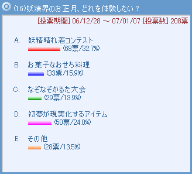 妖精の着物姿はアニメ・原作でもほとんど見られなかったから、晴れ着コンテストは大人気ですね。皆さんお気に入りの妖精の晴れ着姿をご想像されたと思います。ミルモ・ムルモの兄弟も女性陣に負けないようなかわいい晴れ着を着こなしそう。今回は選択肢は挙げるのに苦戦しましたが、皆さんからの「その他」の意見はなるほど！と思えるのが多いですね。お菓子大食いとか初夢語り大会は本当に行われていそうです。妖精のことだからお菓子の夢を見てそうですね。［コメント一覧］
|
|
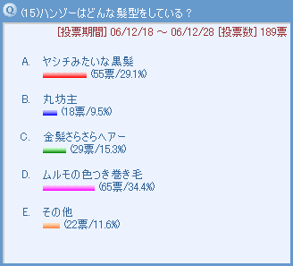 巻き毛が１位とは正直予想外でした(^^;。ヤシチやサスケは黒髪で癖のないストレートヘアーだから、明るい色した巻き毛では仲間に入れてもらえないかも…と思って隠している可能性ありですね。それとは対照的な２位の黒髪、これはハンゾーが特に意味もなく深く頭巾をかぶっているだけかもしれないということですね。一番コメントを集めた”丸坊主”、コメントを読むうちに丸坊主でもかわいいかもと思えるようになりました。その他にある”アフロ”…私でも頭巾を深くかぶりたくなるかも。［コメント一覧］
|
|
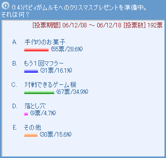 １位のゲーム機、パピィにはWiiみたいな体を動かすゲームが似合っていそう。でも皆さんの心配通り、ムルモは意外にもゲームが上手で、連敗の悔しさのあまりパピィがムルモに心にもないことを言ってしまい、月明かりの下パピィが大泣きするクリスマスを想像してしまったり…。２位の手作りお菓子、ちょっと微妙な味がするけど紳士なムルモは精一杯作ったお菓子を喜んで食べてくれそうです。その他のコメントにある”愛の告白”は、パピィがムルモに向かって「あたちはムルモが好きなの！」と叫ぶドラマチックなシーンを想像しちゃいました。［コメント一覧］
|
|
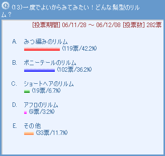 アフロが１位にならなくてホッとしました(^^;。髪が特徴のリルムは、長髪を生かしていろんな髪型にチャレンジして欲しいですよね。三つ編みもポニーテールも、ミルモを惚れさせるには効果抜群だと思います。その他の意見ではやっぱりロングヘアーですね。「かわいいリルム」から「美人のリルム」に変わりそうです。いつも元気なリルムだからツインテールも似合いそうだなぁ。［コメント一覧］
（お題提供：ぴろこさん）
|
リルム(2)
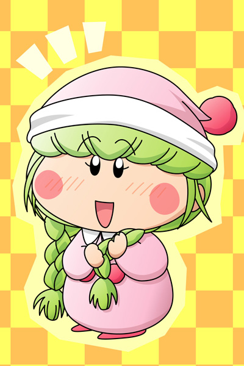
三つ編みがトップに選ばれた記念に、三つ編みなリルムを想像して描いてみました。前髪はいろいろ悩んだ末、いつも通りにしました。カールじゃないとすごく丸顔に見えちゃいますね。とにかくかわいらしさを出すためにいろいろ苦戦しました。
さて、いつもと違う髪型のリルムを見て、ミルモはどんな反応をするのでしょう？かわいい子が大好きなミルモだから(笑)、三つ編みの魅力にミルモは顔を赤くしてしまうとうれしいです。「な、なぁちょっと引っ張ってもいいか？」なんてベタな展開にもなったりして。
その後妖精界では髪型を変えることが流行して、もちろんパピィも髪型変更にチャレンジ。しかしパピィの方は「き、気色悪いでしゅ…」なんて言われる可能性大ですね。(2006/12/20)
|
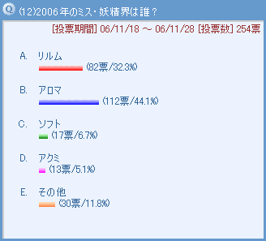 以前アイドルに関するアンケートを行いましたが、今回はターゲットを女性のみに限定！結果はもちろんアロマちゃんがダントツでトップでしたね。すべてにおいて完璧なアロマ、そしてアロマの微笑みが審査員を癒しの空間へ招待していそうです。その横でリルムとアクミがきーっと悔しがっていそう。その他の意見で多かったのはヤマネちゃん。謙虚な性格が票数を集めそう…サスケやハンゾーがたくさん投票していたりして。［コメント一覧］
|
|
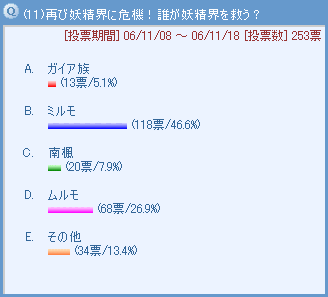 なんだかんだ言ってもさすがは主人公、ミルモが圧倒的な支持を受けました。というよりも、他の妖精がヒーローやヒロインになる光景が思い浮かばないのかも。そんなミルモに対して張り合った我らがムルモ、ブリッコと腹黒によって自分ではあまり努力しなくてもヒーローになりそうです。他の意見ではオリフェが多かったですね。ミルモたちとも連携しながら活躍する劇場版向けなストーリーを見てみたい！［コメント一覧］
|
ミルモ(6)
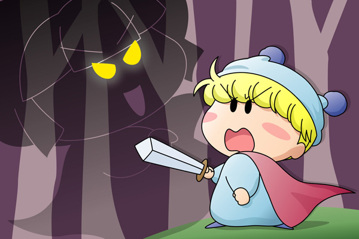
「・・・もっともっと妖精界を面白くするっぴ・・・」
ミルモ「くそーっ、オレたち妖精からお菓子を奪うなんて、
見つけたらただじゃおかねぇ」
妖精界からお菓子が奪われる事件が発生！誰かに操られているモンスターが次々と妖精界のお菓子を略奪して、妖精界にはもう１つもお菓子がなくなってしまいます。それに耐えかねたミルモ王子がモンスターに立ち向かうというRPGっぽい絵を描いてみました。ミルモはこういう凛々しい格好がよく似合います。ヤシチやムルモだと何かギャグっぽく見えてしまいますし。
黒幕はとりあえず「っぴ」の語尾でしゃべるあの妖精にしてみました（深い意味は全然ないです）。途中仲間にリルムやムルモ、ヤシチたちも加わりますが、全くの役立たずで逆にミルモに迷惑をかける光景が想像できます(笑)。(2006/11/24)
|
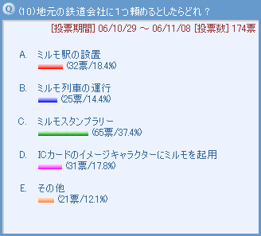 どれも実現して欲しいですが、面白さの観点でスタンプラリーが１位でしたね。ポケモンのを真似て架空でミルモ版を考えてみようかな。たくさんの駅に妖精を配置するとなるとマニアックな妖精も総動員となりそうです。皆さんの考えるミルモ駅やミルモ列車もすごく素敵です。これだったら毎日の通学・通勤も楽しくなりますよね。ミルモファミリーの車両や妖精忍者の車両など、考えるといろいろ浮かんできます。そして車両によって混雑度が変わったりして。［コメント一覧］
|
|
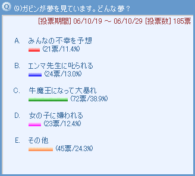 １位に選ばれたのは１３８話「さいゆうき」にもあった大暴れガビンですね。いつも消極的で何かを我慢しているガビンは、夢の中では対照的に積極的である可能性はありますね。そのうち自分の性格に悩み出してミルモに相談する…という光景を思い浮かべたくなります。共通的なコメントでは、リアルな夢を見るガビンのイメージが多かったですね。彼の繊細でアーティスティックな性格が将来何かに生かされることを願いたいです。［コメント一覧］
|
|
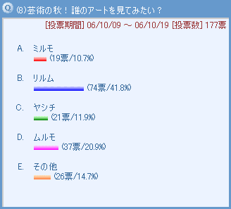 リルムのアートがダントツで１位でしたね。こうしている今もリルムは新たな作品作りに熱中しているのかも。あ、皆さんのコメントをリルムが見たら…「何ですって〜っ」と目の色変えること間違いなしですね(笑)。他の３人のアートも皆さんのコメントの通りだと思います。ミルモはリルムをモデルに選ばず、頭の中に浮かんだチョコの山を描きそうですし。その他ではヤマネの絵は私もぜひ見てみたいですね。モデルを美化して描く素晴らしい才能を彼女は持っていそうです。［コメント一覧］
|
|
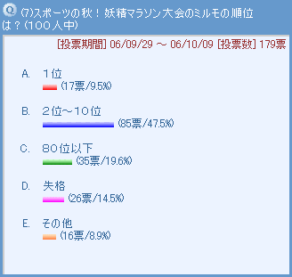 １位の票数がもっとも少ないとは…(^^;。一番票を集めたのが２位〜１０位、ミルモはちょっとした油断で１位を取り逃してしまうタイプと言えましょうか。もしくは他の誰かに１位を譲るようなストーリーもありえますね。そしてたくさんのコメントを集めた失格、「なんだか違反しそう」とか「インチキ」いうコメントがミルモらしいです。優勝賞品がお菓子デパート食べ放題券だったら…インチキする可能性大ですね。［コメント一覧］
|
ミルモ＆ヤマネ(2)
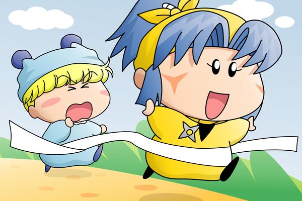
ヤマネ「兄様のかたきを取ることができましたわ！」
優勝賞品のお菓子デパート食べ放題券をめぐってライバルを蹴散らしてきたミルモとヤシチ。ライバルのヤシチを見事倒して、後はゴールするだけのミルモの前に現れたのは…。優勝者本人以外は使えない食べ放題券のため、ヤマネにとってはただの紙切れと一緒なのでした。(2006/10/14)
|
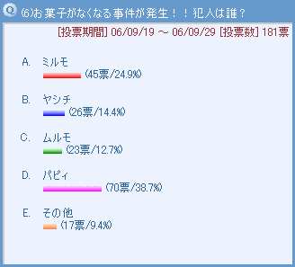 お菓子大好きな妖精たち。悪気は無くても目の前にお菓子があると食べてしまいそう。１位となったパピィも「こんなところにお菓子を置いている方が悪いのよ」と自分を正当化してぱくっと食べちゃうのかな。２位のミルモは…王子としての品格を疑うような皆さんのコメントが面白いです(笑)。その他の意見で多かったネズミは、ヤシチやミルモを困らせるために食べそうですね。アロマちゃんやペータは大穴ですが、バレそうになったときの焦る表情を見てみたい！［コメント一覧］
|
|
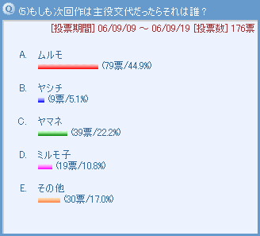 ちょっと強引なテーマでしたが、ダントツ１位だったのはムルモ！腹黒ムルモではなくラブリーなムルモを期待する声が多いようで。小さな体でいろんな冒険やパピィとの恋を繰り広げて欲しいですよね。その他の意見を読むと、主人公そのままの意見がやはり多くて、ミルモの主人公としての素質が証明された気がします。ミルモの子供は面白そうですが、大人になったミルモはあまり見たくないかも(^^;。それにしてもヤシチの不人気っぷりが面白いですね。［コメント一覧］
|
|
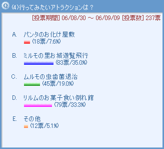 どれも妖精ならではのスポット！ １位は僅差でミルモの里お城遊覧飛行、妖精界という舞台に憧れる皆さんの思いが伝わってきます。ミルモとムルモが普段どんな生活を送っているのかも気になりますし（ムルモの部屋は整理整頓されていそう）。２位のリルムのお菓子への興味の高さにはびっくり。食べる前に生命保険に加入するのをお忘れなく(笑)。その他の意見で多かった妖精忍者との忍術体験は、ネズミとヤシチとで正反対なものになりそうだなぁ。［コメント一覧］
（お題提供：ぴろこさん）
|
|
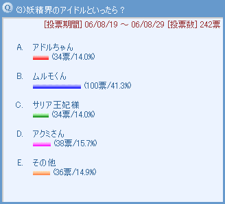 アイドル妖精のアドルを差し置いてダントツの１位を獲得したのはムルモくん。「妖精界の…」が付くと第二王子の身分がモノを言う…じゃなかった、ムルモのキュートな笑顔には誰もがうっとりさせられますよね。コメントにある「キャラソンでも…」確かにその通りですね。その他の妖精にはかわいい系の妖精がたくさん！やはりミルモもハートを奪われたアロマがその他では一番人気でした。［コメント一覧］
（お題提供：ハムトラ♪さん）
|
|
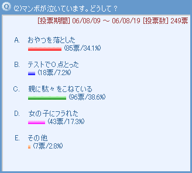 どれもカッコ悪い選択肢ばかりですが、微妙な差で親に駄々をこねるマンボが選ばれました。これはかなりカッコ悪い！ペータたちに見られたら大変！！だけどこういうかわいいカッコ悪さがマンボの特長なんですよね。その他の意見にある「かっこ悪いって言われた」、確かにそれだけでマンボは泣いてしまいそうです。［コメント一覧］
|
|
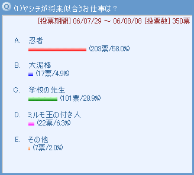
やはりヤシチには忍者以外の職業が似合わないということですね。（たまにはドジもするけど）かっこよくお城に忍び込む大人のヤシチの姿を思わず想像しちゃいました。その他には、子分たちに対する面倒見の良さから家政婦という意見も…納得。デザイナーという意見については、絵が上手なのはパンツだけのような(笑)。［コメント一覧］
|
|